珍寺大道場200タイトル記念特別企画
〜名古屋コンクリ造形師列伝〜
山田光吉＆後藤鍬五郎伝説
唐突だが、クジラの画像を御覧頂く。
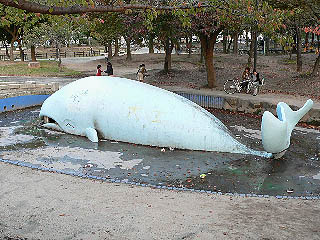 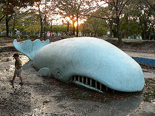
ここは名古屋市南区、道徳公園という公園の一画である。
このクジラのモニュメントをつくった人物が今回の主役である。
その男の名は後藤鍬五郎。彼は当サイトにおける最大の関心事のひとつ、戦前大仏に携わる超A級の重要人物なのだ。
実はこの後藤氏、昭和初期に活躍したコンクリ造形師で、当サイトで以前紹介した聚楽園大仏の製作スタッフでもあった。
この度、後藤鍬五郎の仕事をまとめた名古屋の郷土史家の加納氏に伺った話を基にこの希代のコンクリ造形師の姿を追ってみたい。
まずは本の紹介から。〜「近代史を飾る コンクリート製彫刻・建造物職人 後藤鍬五郎」加納誠 著〜
この本は後藤鍬五郎という名古屋のコンクリ造型師の手掛けた数々の仕事を紹介したものだ。その中に大仏舎弟としては見逃せない記述がある。
まず、最大のトピックスとして聚楽園大仏の製作に後藤が関わっていたという事。
聚楽園大仏は昭和2年に開眼された本邦初の胎内空間を持つコンクリート製の大仏である。
この大仏は名古屋の実業家、山田才吉が当初名古屋港の南陽館のあった場所に建てようとしていたもので、台座まで建てられたが工事は中断。場所を現在の聚楽園に移して大仏建設が再開された。
その際、建設に携わったのが名古屋のコンクリ職人の山田光吉と後藤鍬五郎らであった。
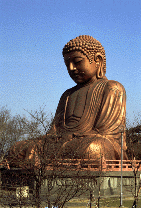
この聚楽園の大仏製作にあたって、山田＆後藤氏の名古屋コンクリ仏師コンビは鎌倉大仏を参考にしている。
一段一段、輪切りにしたようなパーツを積み上げていく工法を採用したのだ。
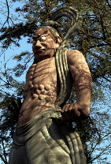 
以前から気になっていた大仏前に立つ5メートルの仁王像や8メートルの弘法大師座像（現存せず）もコンクリ仏師コンビによるものである事が判明した。
聚楽園大仏完成直後には西尾市の浄福寺大仏建設に着手している。
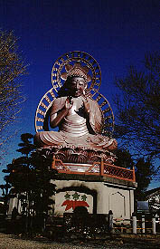
大仏自体のプロポーションは若干違うが、赤い手摺が付いたコンクリートの基段が聚楽園大仏と良く似ている。
また、近くにある閻魔像も後藤氏が関わっているとされている。
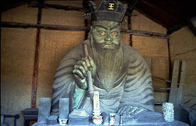 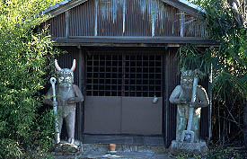
この閻魔像及び2体の鬼（なのか？）を制作した人物は沢常吉という地元の人物であるという。
しかしあまりにも閻魔像と鬼の造形のギャップが大きい。同じ人物の作とするにはチト無理がある。
この点を郷土史家の榊原宏之氏は小論「刈宿の大仏と閻魔像」（愛三時報2001年）で閻魔像の造形に関しては後藤氏がかかわっている、と指摘している。
恐らく閻魔像の方は後藤氏がメインで製作し、鬼は沢氏が単独で製作したものなのだろう。
ちなみに沢氏は浄福寺大仏建立の世話人になっている。
昭和13年には山田光吉が長野県山ノ内町の湯田中温泉に護国観音像を建設している。
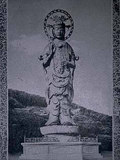 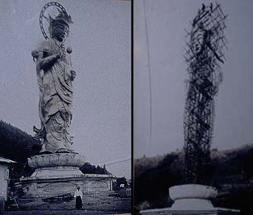
・・・実は以前、この護国観音の作者を山田才吉翁とお伝えしたが、これは山田違いでした。
山田光吉氏の屋号が山光堂という名前なので、この山田山光というのは山田光吉氏であると思われる。
あ、拙著「お寺に行こう！」にも山田山光＝山田才吉って書いちゃった・・・
この場を借りて訂正させていただきます。
尾張の珍寺番長は山田光吉氏でした！
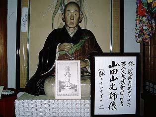
こうしてみると戦前大仏の多くに関わっている後藤、山田職人コンビだが、もうひとつ気になる戦前大仏がある。
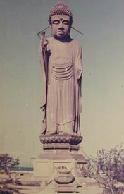
昭和12年に建立された滋賀県長浜市にあった護国阿弥陀如来像（初代びわこ大仏）である。
建設者は定かではないが、後藤、山田コンビが関係している、と私は睨んでいるのだが如何であろう。
理由は台座のデザイン。上記の戦前大仏のものとかなり似ているように思えるのだが、どうでしょう？
そう考えると戦前コンクリ大仏のほとんどに関わっていると言ってもいいくらいの勢いで製作しまくっている。
そんな後藤山田コンビが関わった仕事として見逃せないのは先のクジラの近くにあった道徳観音山である。
ここは巨大な人工の築山で、滝が配されていたというのだが、驚くべきはその内部である。
何と山の内部はスケート場になっていたというのだ。しかも滝の下はプール。
昭和初期のものとは思えない程のハイパーリミックスぶり。
しかも山頂には6メートルのコンクリ観音が立っていたのだ。凄い！
この道徳観音山、残念ながら昭和39年に解体されてしまったが、その麓に立っていたという観音像（頂上に立っていた観音様じゃあないよ）が近くの東昌寺という寺に道徳観音という名で現存している。
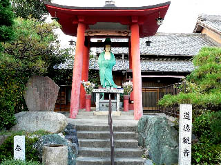 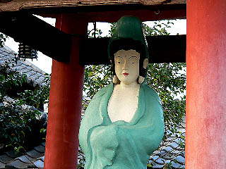
平成9年に塗り替えられたという道徳観音は70数余年のこの地の激しい移り変わりをどう見ているのであろう。
一方、道徳観音山の跡地は今は普通〜の住宅地になっている。
唯一の名残りは観音山の前に建っていた伊勢湾台風関係の碑だけである。
陽も暮れてかなり薄暗くなった。今も昔も変わらないのはコドモ達の快活さだけ、という事か。
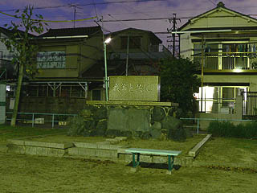 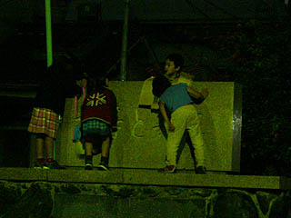
最後にまた道徳公園のクジラに戻る。
かつては背中にあるノズルから「潮吹き」までして、口から内部にも入れたというこのクジラ、作られたのは昭和2年。コンクリ造型物としてはかなりの老舗である。後藤氏が聚楽園大仏を手掛けた後に造ったそうである。
それにも関わらず古さを感じさせないのは加納氏をはじめとした方々がペンキの塗り替えをしたり、リペアをしているからだ。
しかしそれ以上にクジラが活き活きとしているのは現役の遊具として今でも子供達に親しまれているからだろう。
昭和2年から十数年の間に怒濤の勢いで疾走した名古屋コンクリ大仏師コンビ。
このクジラを見てかつての戦前大仏の濃い遺伝子に思いを馳せようではないか。
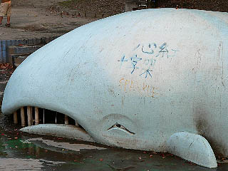
だからイタズラ書きはやめい！
珍寺大道場 HOME